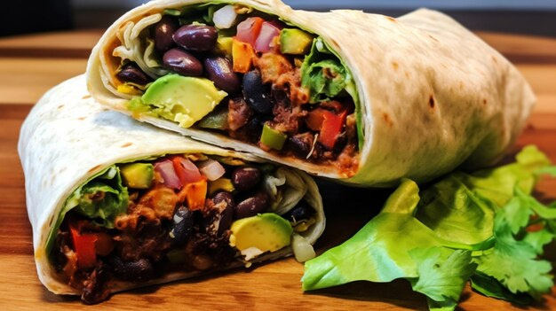
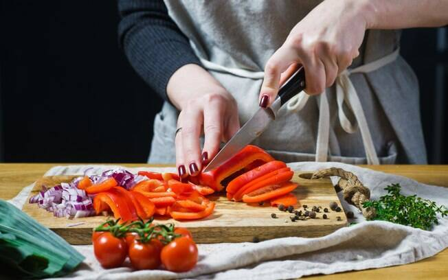
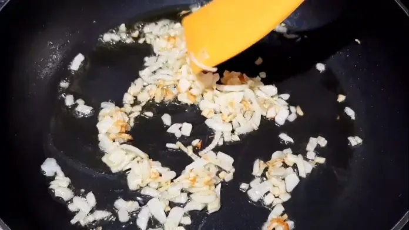
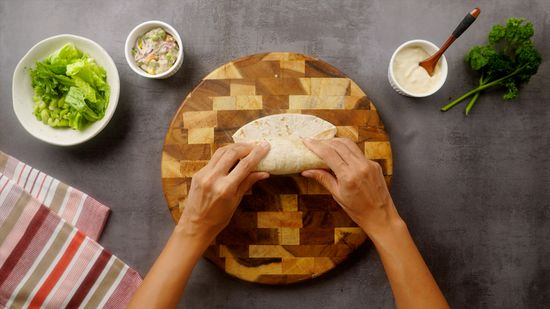

WRAP DE FEIJÃO
O que é?
Tortilha recheada com feijão preto temperado, milho, tomate, alface crocante e um toque de molho de iogurte. Uma combinação saborosa e rica em proteínas para uma refeição saudável
Ingredientes da Receita:
Para 1-2 porções
- - 50 GRAMAS DE FEIJÃO EM LATA
- - 20 G ALFACE
- - 3 PIMENTÕES
- - 4 CENOURAS PEQUENAS
- - 2 DENTES DE ALHO
- - 4 CEBOLAS
- - 1 ABACATE
- - 200g de CARNE MOIDA
- - 1 LATA DE MILHO
- - 200g YOGURT NATURAL
- - 80 GRAMAS DE FEIJÃO EM LATA
- - 30 G ALFACE
- - 5 PIMENTÕES
- - 6 CENOURAS PEQUENAS
- - 4 DENTES DE ALHO
- - 5 CEBOLAS
- - 2 ABACATES
- - 400g de CARNE MOIDA
- - 2 LATAS DE MILHO
- - 300g YOGURT NATURAL
Para 3-4 porções

1.Cortar todos os ingredientes crus e separar: alface, rúcula, abacate e cenoura. Aproveitar para picar a cebola e o alho para temperar a carne e feijão.

2.Fazer um fundo de panela com alho, cebola, pimentão e adicionar a carne moída. Separar e fazer o mesmo com o feijão.

3.Colocar os ingredientes crus que foram cortados e misturar com a carne moída e feijão, dobrar em envelope.